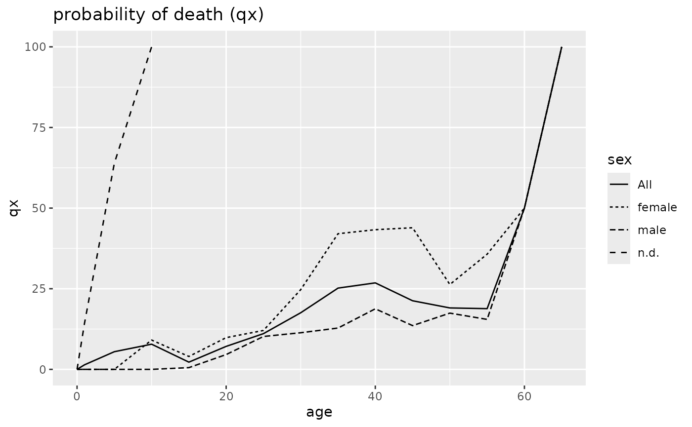
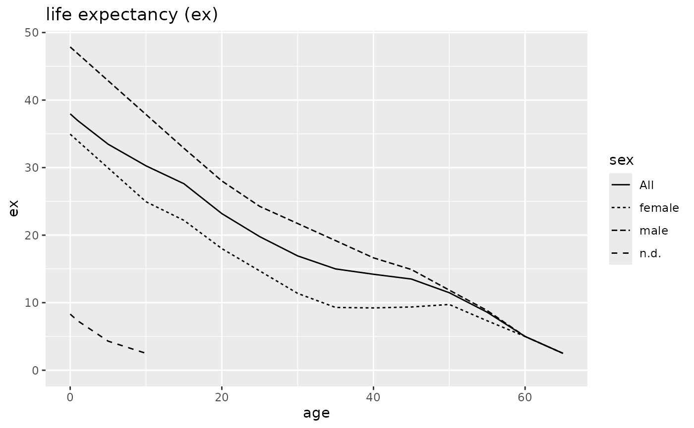
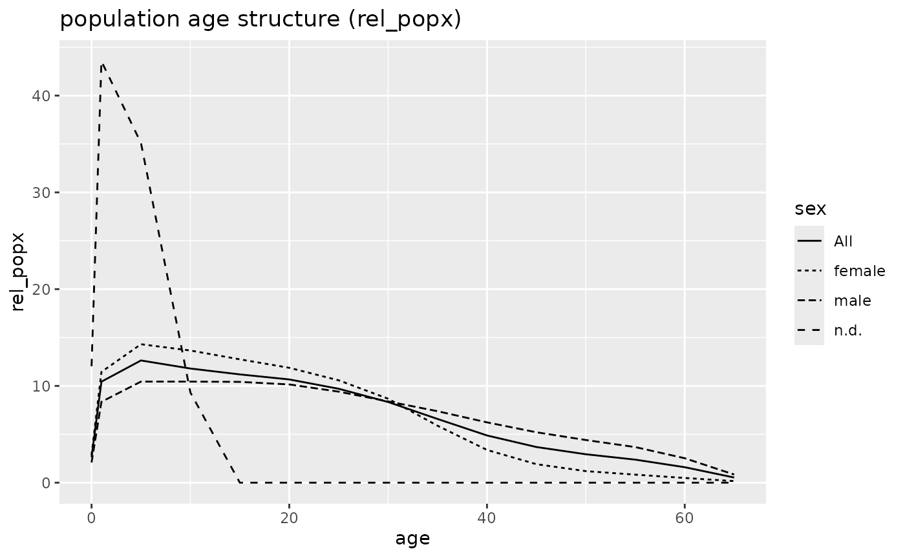
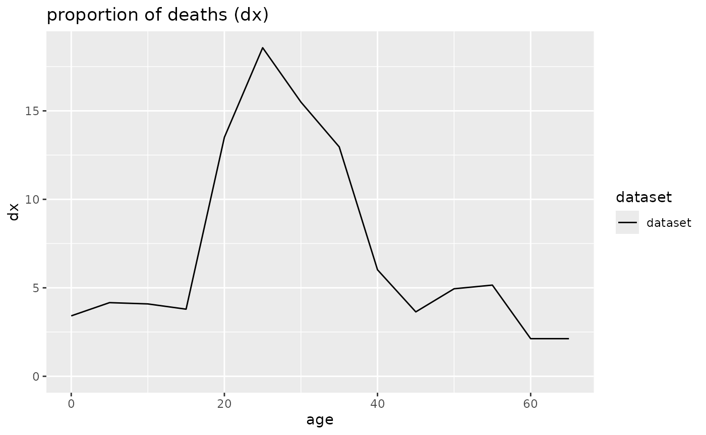
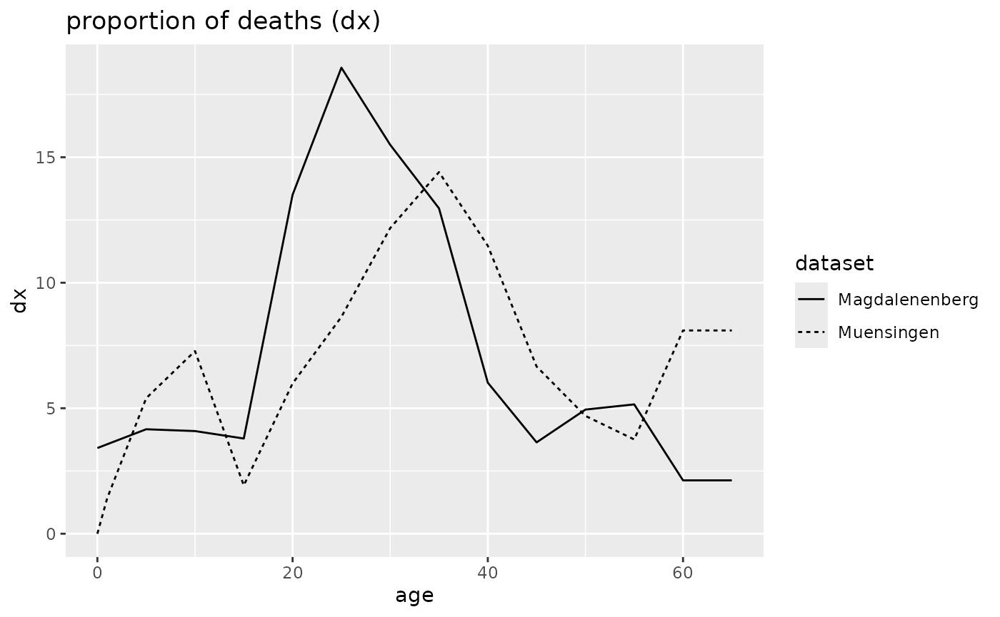
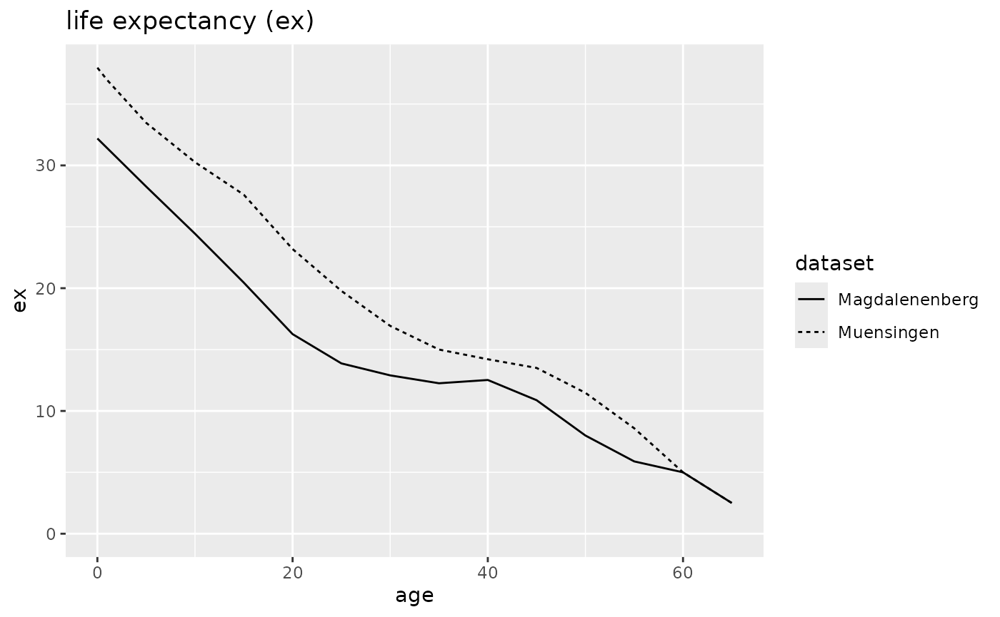
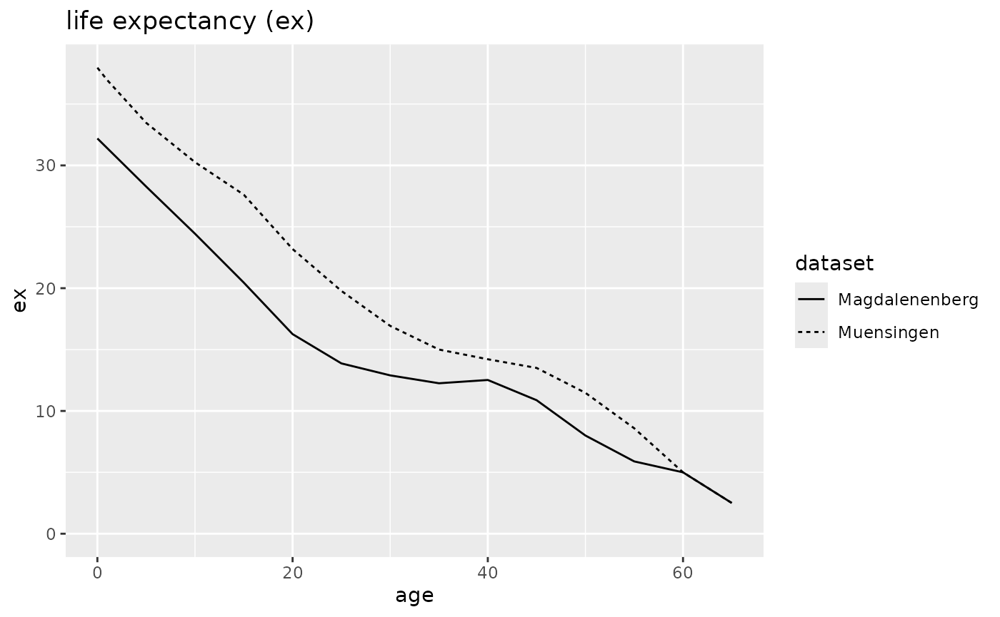

Münsingen
Archaeological background
The cemetery of Münsingen-Rain was discovered in 1904 during quarrying and then extensively excavated in 1906. The dead were buried singly and supine in wodden coffins, often lavishly equipped with jewelry or weapons. The documentation and subsequent publication of the graves in 1908 (Wiedmer-Stern 1908) was outstanding for that time. This and the fact that Münsingen-Rain with 220–230 individuals and its occupation of roughly 300 years covers much of the Latène period secured it one of the most important places in typological and chronological studies of that period (Hodson 1968; see also Mueller 1998).
Recently, in a number of studies, the anthropological and archaeological material has been reanalysed from different angles (Jud 1998; Alt, Mueller, and Jud 2005; Mueller, Alt, and Jud 2008; Scheeres et al. in_press; Moghaddam et al. 2016). Though some papers explicitly dealt with the age and sex structure of the cemetery (e.g., Hinton 1986; Jud 1998, 125ff.), interestingly, none has yet presented a thorough demographic analysis of the individuals from Münsingen-Rain.
The data set
The data originates from a published report of recent scientific analyses of the surviving skeletal material (Moghaddam et al. 2016) of 71 individuals. The data is available as supplemental online material and was directly taken from the respective xlsx-file. Beside the age-range of each individuals the sex, the archaeological phase and the binary information if grave goods, if existing, are included. Further columns that are not of interest in the present context were omitted. The authors do not compare their results with those of an older investigation of the same individuals. However, a comparison with Hug (1956) shows that generally there is a very good agreement in age as well as sex determination.
Constructing the life table
# load dataset muensingen
muen <- mortAAR::muensingen First of all, we have to get an overview of the age classes that were
used. The easiest way would be muen$age. However, this
results in roughly formatted row of strings. We used the following code
to get an ordered and well-arranged list without duplicated age
classes.
## age
## A52 10
## A50 3-5
## A55 7-8
## A51 7-9
## A57 >50
## A58 >60
## A61 9-10
## A48 12-14
## A63 12-15
## A102 13-15
## A43 15-20
## A99 18-28
## A47 18-30
## A101 20-26
## A62 20-30
## A59 20-40
## A74 25-35
## A83 25-40
## A53 25-45
## A44 30-40
## A84 30-45
## A70 30-50
## A85 34-50
## A60 35-45
## A73 35-50
## A89 40-50
## A78 40-55
## A98 40-60
## A72 45-60
## A71 50-70
## A45 10+/-1As can be easily seen, the data set is comprised of 31 different age ranges. Skimming through the lines it is obvious that the anthropologists were not completely consequent in their age ranges. While „20–40“ clearly should be read as „from 20 to 39 years“ this is certainly not the case with for example „7–8“. The first one is in our terminology exclusive of the maximal age range, the second inclusive. Less clear are cases like „12–14“ or „13–15“. If we want to define 5-year-classes the differentiation does not really matter in the first case, as the individual would fall completely in the age range of 10 to 14. In the second case, the differentiation is unfortunately of importance. Taking it as inclusive, the individual would count with 1/4 to the age class of 15 to 19 while reading it as exclusive the individual would be associated with the younger age class.
Unfortunately, we cannot solve this issue but for future reports we can only ask the authors to be more precise in their terminology. For the sake of the example, we assumed that age ranges only one year apart (e.g., „7-8“) are meant as inclusive and had to be adapted, but otherwise treated the age ranges as exclusive. For those individuals with an open end, we assume a maximal age of 70.
In the next step, not only the aforementioned inconsistencies have to be corrected, but also non-numerical characters (e.g., “>”) must be replaced to be able to feed the data into mortAAR.
# correct inconsistencies
muen <- muen %>%
dplyr::mutate(
age = dplyr::case_when(
.$age == ">50" ~ "50-70",
.$age == ">60" ~ "60-70",
.$age == "10+/-1" ~ "9-12",
.$age == "10" ~ "10-11",
.$age == "7-8" ~ "7-9",
.$age == "9-10" ~ "9-11",
TRUE ~ .$age
)
)After adjusting the age class categories, the column “age” can be split into two separate columns “from” and “to”, which mark the age span. These are then further transformed into numeric columns.
# split string column
muen <- muen %>%
tidyr::separate(age, c("from", "to")) %>%
transform(from = as.numeric(from), to = as.numeric(to)) All the steps above were necessary to prepare the raw data. We are
now ready to feed it into the function prep.life.table that
rearranges it for the actual life table function.
We want to have 5-year-age categories, except for the first 5 years
which are further split into the first and the subsequent 4 years.
Therefore, we choose “Standard” as a method. As explained
above, we assume that the age ranges are meant to be exclusive of the
closing year (e.g., “20–40” as “20–39”). We regulate this by choosing
“excluded” for agerange. The beginning and ending of the
age classes is framed by “from” (= agebeg) and “to” (=
ageend) respectively. For the first run, we choose “sex” as
the grouping variable group but we could also have selected
“latene_phase” (the archaeological phasing) or “grave_goods” (existence
or non-existence of grave goods).
# apply data preparation function
muen_prep <- muen %>%
prep.life.table(
group = "sex",
agebeg = "from",
ageend = "to",
method = "Standard",
agerange = "excluded"
) The resulting data frame muen_prep is then fed into the
life table function life.table.
# calculate life.table
muen_result <- muen_prep %>%
life.table() First, the tabular output is created.
muen_result ##
##
## mortAAR life table for sex: female (n = 33 individuals)
##
## Life expectancy at birth (e0): 34.946
##
## x a Ax Dx dx lx qx Lx Tx ex rel_popx
## 1 0--0 1 0.333 0.000 0.000 100.000 0.000 100.000 3494.571 34.946 2.862
## 2 1--4 4 1.333 0.000 0.000 100.000 0.000 400.000 3394.571 33.946 11.446
## 3 5--9 5 2.500 0.000 0.000 100.000 0.000 500.000 2994.571 29.946 14.308
## 4 10--14 5 2.500 3.000 9.091 100.000 9.091 477.273 2494.571 24.946 13.658
## 5 15--19 5 2.500 1.200 3.636 90.909 4.000 445.455 2017.298 22.190 12.747
## 6 20--24 5 2.500 2.833 8.586 87.273 9.838 414.899 1571.843 18.011 11.873
## 7 25--29 5 2.500 3.133 9.495 78.687 12.067 369.697 1156.944 14.703 10.579
## 8 30--34 5 2.500 5.646 17.109 69.192 24.726 303.188 787.247 11.378 8.676
## 9 35--39 5 2.500 7.229 21.907 52.083 42.061 205.650 484.059 9.294 5.885
## 10 40--44 5 2.500 4.313 13.068 30.177 43.305 118.213 278.409 9.226 3.383
## 11 45--49 5 2.500 2.479 7.513 17.109 43.911 66.761 160.196 9.363 1.910
## 12 50--54 5 2.500 0.833 2.525 9.596 26.316 41.667 93.434 9.737 1.192
## 13 55--59 5 2.500 0.833 2.525 7.071 35.714 29.040 51.768 7.321 0.831
## 14 60--64 5 2.500 0.750 2.273 4.545 50.000 17.045 22.727 5.000 0.488
## 15 65--69 5 2.500 0.750 2.273 2.273 100.000 5.682 5.682 2.500 0.163
##
## mortAAR life table for sex: n.d. (n = 7 individuals)
##
## Life expectancy at birth (e0): 8.31
##
## x a Ax Dx dx lx qx Lx Tx ex rel_popx
## 1 0--0 1 0.333 0.000 0.000 100.000 0.000 100.000 830.952 8.310 12.034
## 2 1--4 4 1.333 1.000 14.286 100.000 14.286 361.905 730.952 7.310 43.553
## 3 5--9 5 2.500 3.833 54.762 85.714 63.889 291.667 369.048 4.306 35.100
## 4 10--14 5 2.500 2.167 30.952 30.952 100.000 77.381 77.381 2.500 9.312
## 5 15--19 5 2.500 0.000 0.000 0.000 NaN 0.000 0.000 NaN 0.000
## 6 20--24 5 2.500 0.000 0.000 0.000 NaN 0.000 0.000 NaN 0.000
## 7 25--29 5 2.500 0.000 0.000 0.000 NaN 0.000 0.000 NaN 0.000
## 8 30--34 5 2.500 0.000 0.000 0.000 NaN 0.000 0.000 NaN 0.000
## 9 35--39 5 2.500 0.000 0.000 0.000 NaN 0.000 0.000 NaN 0.000
## 10 40--44 5 2.500 0.000 0.000 0.000 NaN 0.000 0.000 NaN 0.000
## 11 45--49 5 2.500 0.000 0.000 0.000 NaN 0.000 0.000 NaN 0.000
## 12 50--54 5 2.500 0.000 0.000 0.000 NaN 0.000 0.000 NaN 0.000
## 13 55--59 5 2.500 0.000 0.000 0.000 NaN 0.000 0.000 NaN 0.000
## 14 60--64 5 2.500 0.000 0.000 0.000 NaN 0.000 0.000 NaN 0.000
## 15 65--69 5 2.500 0.000 0.000 0.000 NaN 0.000 0.000 NaN 0.000
##
## mortAAR life table for sex: male (n = 31 individuals)
##
## Life expectancy at birth (e0): 47.863
##
## x a Ax Dx dx lx qx Lx Tx ex rel_popx
## 1 0--0 1 0.333 0.000 0.000 100.000 0.000 100.000 4786.290 47.863 2.089
## 2 1--4 4 1.333 0.000 0.000 100.000 0.000 400.000 4686.290 46.863 8.357
## 3 5--9 5 2.500 0.000 0.000 100.000 0.000 500.000 4286.290 42.863 10.447
## 4 10--14 5 2.500 0.000 0.000 100.000 0.000 500.000 3786.290 37.863 10.447
## 5 15--19 5 2.500 0.167 0.538 100.000 0.538 498.656 3286.290 32.863 10.418
## 6 20--24 5 2.500 1.417 4.570 99.462 4.595 485.887 2787.634 28.027 10.152
## 7 25--29 5 2.500 3.000 9.677 94.892 10.198 450.269 2301.747 24.256 9.407
## 8 30--34 5 2.500 3.000 9.677 85.215 11.356 401.882 1851.478 21.727 8.397
## 9 35--39 5 2.500 3.000 9.677 75.538 12.811 353.495 1449.597 19.190 7.386
## 10 40--44 5 2.500 3.833 12.366 65.860 18.776 298.387 1096.102 16.643 6.234
## 11 45--49 5 2.500 2.250 7.258 53.495 13.568 249.328 797.715 14.912 5.209
## 12 50--54 5 2.500 2.500 8.065 46.237 17.442 211.022 548.387 11.860 4.409
## 13 55--59 5 2.500 1.833 5.914 38.172 15.493 176.075 337.366 8.838 3.679
## 14 60--64 5 2.500 5.000 16.129 32.258 50.000 120.968 161.290 5.000 2.527
## 15 65--69 5 2.500 5.000 16.129 16.129 100.000 40.323 40.323 2.500 0.842
##
## mortAAR life table for sex: All (n = 71 individuals)
##
## Life expectancy at birth (e0): 37.96
##
## x a Ax Dx dx lx qx Lx Tx ex rel_popx
## 1 0--0 1 0.333 0.000 0.000 100.000 0.000 100.000 3795.951 37.960 2.634
## 2 1--4 4 1.333 1.000 1.408 100.000 1.408 396.244 3695.951 36.960 10.439
## 3 5--9 5 2.500 3.833 5.399 98.592 5.476 479.460 3299.707 33.468 12.631
## 4 10--14 5 2.500 5.167 7.277 93.192 7.809 447.770 2820.246 30.263 11.796
## 5 15--19 5 2.500 1.367 1.925 85.915 2.240 424.765 2372.477 27.614 11.190
## 6 20--24 5 2.500 4.250 5.986 83.991 7.127 404.988 1947.711 23.190 10.669
## 7 25--29 5 2.500 6.133 8.638 78.005 11.074 368.427 1542.723 19.777 9.706
## 8 30--34 5 2.500 8.646 12.177 69.366 17.555 316.388 1174.296 16.929 8.335
## 9 35--39 5 2.500 10.229 14.407 57.189 25.192 249.927 857.908 15.001 6.584
## 10 40--44 5 2.500 8.146 11.473 42.782 26.818 185.226 607.981 14.211 4.880
## 11 45--49 5 2.500 4.729 6.661 31.309 21.275 139.891 422.755 13.503 3.685
## 12 50--54 5 2.500 3.333 4.695 24.648 19.048 111.502 282.864 11.476 2.937
## 13 55--59 5 2.500 2.667 3.756 19.953 18.824 90.376 171.362 8.588 2.381
## 14 60--64 5 2.500 5.750 8.099 16.197 50.000 60.739 80.986 5.000 1.600
## 15 65--69 5 2.500 5.750 8.099 8.099 100.000 20.246 20.246 2.500 0.533The visual inspection can be of great help, especially when the comparison of two or more groups is involved.

## Warning: Removed 11 rows containing missing values or values outside the scale range (`geom_line()`).
## Warning: Removed 11 rows containing missing values or values outside the scale range (`geom_line()`).
Mortality patterns
The maximum within the proportion of deaths (dx) of all individuals from Münsingen-Rain is around 40 years. Largely missing are younger individuals below 20, but also the age of 50 and above is only slightly present. Especially the apparent lack of the subadult individuals generates questions concerning the representation of the data. Already a superficial look at any modern life tables leads to the expectation of far higher numbers of younger individuals. Therefore, the obvious conclusion seems that not everybody was buried within the cemetery.
However, there are also differences between the adult individuals. The maximum in females was in their 40s, while male individuals apparently died somehow later in their 50s. There are virtually no female individuals older than 55, but many males above 60. Accordingly female individuals suffered a much higher probability of death (qx), had less survivorship (lx) within all age categories. The life expectancy differs as much as nearly 13 years (35.0 for females vs. 47.9 for males), but this is also due to the fact that it was obviously possible to sex six subadult females, but nearly no subadult males.
As a result the analysis leaves more open questions than answers: Representation is obviously not given, as is demonstrated by the largely missing subadult individuals. However, even with adult individuals, the highly differing mortality pattern between males and females elicits the question if this was really due to the differing life expectancy or differing cultural preferences in burying males and females.
We invite the reader to regroup the data with the variables “latene_phase” and “grave_goods” and compare her results with the conclusions by P. Hinton (1986).
Magdalenenberg
Archaeological Background
One of the largest burial mounds in Central Europe is the so-called ’Magdalenenberg‘ near Villingen-Schwenningen in Baden-Württemberg. Within the Early Iron Age it dates into the beginning of the Upper Hallstatt Period (c. 620–450 calBC). It had a diameter of over 100 metres and has still a height of 6,5 metres. For complete excavation 45000 cubic metres of earth and stone had to be moved. The first excavations took place in 1887 and 1890 and are in an excellent state of preservation. A modern excavation was done between 1970 and 1973 by Konrad Spindler.
The central grave was probably erected in 616 BC, as established by dendrochronology (Billamboz and Neyses 1999); it had already been reopened in ancient times, but the wooden chamber was still in pristine condition when excavated. Furthermore, more than 100 additional burials were found which were dug into the burial mound a relatively short period after the installation of the central grave. These proved to be of great importance for relative chronology as well as for the social interpretation of the Hallstatt period.
The importance of the ’Magdalenenberg‘ does not only derived from the excellent preservation and the many burials that were uncovered, but also from the fact that the excavator Spindler did not choose to wait for the publication until everything was excavated or studied. He started to publish the raw results already in 1971 when the excavation was still under way. By 1980 all graves were published in six volumes (Spindler 1971, 1972, 1973, 1976, 1977; 1980).
In recent years the anthropological material has been subjected to stable isotope analyses (Oelze et al. 2012). In this context the whole material was analysed again by established anthropological methods to get more information on the age and sex of the deceased. This resulted into a paper on the demographic structure of the population of ‘Magdalenenberg’ (Zaeuner and Wahl 2013). The new analyses were able to specify the results in some respects done in the 1970s, but for the sake of this paper it is important to emphasize that in general, they are both congruent.
The data set
The aforementioned paper (Zaeuner and Wahl 2013) provides a complete table of the findings, but as this is very detailed, it is easier to refer to the life table the authors generated. They refrained from including an age range of 0–1, so we followed them in this. As explained above, mortAAR allows this easily. For the oldest age, we assumed, similar to Münsingen, a maximal age of 69 (because the age ranges are in this case inclusive).
Because of one peculiarity their life table differs from the one mortAAR generates: they estimated the lived years of the oldest age group, 4.72 individuals, with 0, which means that they assumed that the individuals died after reaching their 60th birthday. This does not seem very plausible to us, and we think that the result of mortAAR is more realistic (average death in the middle of the age class). The differences apply specifically to the sum of lived years (Lx) and thus also to Tx, ex and the relative population measure (rel_popx).
Constructing the life table
The preparing steps for the construction of the life table of the population from ‘Magdalenenberg’ are less extensive than from Münsingen-Rain because the data already came from a life table and is thus better prepared.
mag <- magdalenenberg The only replacement necessary concerns the oldest age group.
mag <- mag %>%
tidyr::separate(a, c("from", "to")) %>%
transform(from = as.numeric(from), to = as.numeric(to)) As method we choose this time “Equal5”. This way we get
5-year-intervals throughout, as in the original life table. The closing
year is meant to be counted as well, therefore agerange is
set to “included”. The biggest difference to the Münsingen example
concerns the number of deceased. Within the Münsingen data each line
concerns one individual, while within the Magdalenenberg data each line
(= age range) concerns more than one individual. This is why it is
mandatory this time to define dec. Because we analyze all
individuals together, no grouping variable is specified and therefore
only one life table will be computed.
mag_prep <- mag %>%
prep.life.table(
dec = "Dx",
agebeg = "from",
ageend = "to",
method = "Equal5",
agerange = "included"
) Finally, the prepared table is fed into the function
life.table, and the result printed as well as plotted.
mag_result <- mag_prep %>%
life.table()
mag_result ##
## mortAAR life table (n = 111 individuals)
##
## Life expectancy at birth (e0): 32.196
##
## x a Ax Dx dx lx qx Lx Tx ex rel_popx
## 1 0--4 5 1.667 3.79 3.414 100.000 3.414 488.619 3219.632 32.196 15.176
## 2 5--9 5 2.500 4.62 4.162 96.586 4.309 472.523 2731.014 28.276 14.676
## 3 10--14 5 2.500 4.54 4.090 92.423 4.425 451.892 2258.491 24.436 14.036
## 4 15--19 5 2.500 4.21 3.793 88.333 4.294 432.185 1806.599 20.452 13.423
## 5 20--24 5 2.500 14.99 13.505 84.541 15.974 388.941 1374.414 16.257 12.080
## 6 25--29 5 2.500 20.61 18.568 71.036 26.138 308.761 985.473 13.873 9.590
## 7 30--34 5 2.500 17.20 15.495 52.468 29.533 223.604 676.712 12.897 6.945
## 8 35--39 5 2.500 14.39 12.964 36.973 35.063 152.455 453.108 12.255 4.735
## 9 40--44 5 2.500 6.68 6.018 24.009 25.066 105.000 300.653 12.523 3.261
## 10 45--49 5 2.500 4.04 3.640 17.991 20.230 80.856 195.653 10.875 2.511
## 11 50--54 5 2.500 5.49 4.946 14.351 34.463 59.392 114.797 7.999 1.845
## 12 55--59 5 2.500 5.72 5.153 9.405 54.789 34.144 55.405 5.891 1.060
## 13 60--64 5 2.500 2.36 2.126 4.252 50.000 15.946 21.261 5.000 0.495
## 14 65--69 5 2.500 2.36 2.126 2.126 100.000 5.315 5.315 2.500 0.165For the purpose of this example, we limit the graphical output to the proportion of deaths (dx), probability of death (qx) and life expectancy (ex).


Mortality patterns
Very similar to the Münsingen example, the maximum within the proportion of deaths (dx) of all individuals is in early grown up years, this time around 30 years. Again, largely missing are younger individuals below 20, but also the age of 50 and above. Because of the lack of younger individuals, life expectancy at birth is relatively high at 32.2 years. Already observed by Zäuner and Wahl, the fact that life expectancy is steadily declining from birth onwards is completely atypical. Remarkable, but certainly an artefact due to the necessary artificial age ranges, is the steep decline of the probability of death (qx) after 40 and 60, respectively.
Comparing Early Iron Age (Magdalenenberg) and Middle/Late Iron Age (Münsingen-Rain)
As a last step for our analysis, we will compare the curves of the life tables of the cemeteries from the ‘Magdalenenberg’ and Münsingen-Rain.
Constructing the life table
The output of the function prep.life.table can be
addressed separately by their grouping names. We use this option to
collect the results of the above examples Münsingen-Rain and
Magdalenenberg. For ‘Magdalenenberg’ with no grouping variable the name
of the corresponding data.frame within the list of results
is “Deceased” by default. Because we want to have comparable data from
Münsingen-Rain we choose the output for all individuals
(data.frame named “All” by default).
comp <- list(mag_prep$Deceased, muen_prep$All) To have meaningful names for the graphical output, we change these.
Again, the newly formed and renamed list is then fed into the
function life.table.
comp_result <- comp %>%
life.table() We can skip the tabular output because this has already been provided above and go straight to the diagrams.

 

Mortality patterns
The similarities, but also the differences between the data sets are striking. On the one hand, the general shape of the curves of the probability of death (dx) is the same with very low values in the younger and older age classes. By far the most prominent age group in both data sets are the middle aged individuals. However, it seems that the peak for the Magdalenenberg individuals are in the 30s, while for the Münsingen population it is 10 years later. This difference is also reflected in the other diagrams: The probability of death (qx) of the Magdalenenberg individuals is higher in nearly all age categories within 20+, and their rate of survivorship (lx) is decreasing faster. Consequently, while the Münsingen have a life expectancy of 38.0 years when born, the one for the population interred in Magdalenenberg is only at 32.2 years. This difference in the remaining life expectancy remains more or less the same till the highest age group.
The differences are difficult to explain. First, of course, we have to assess the possibility that the age difference reflects differences present in real life. However, as such a selection is obvious with the subadult individuals it seems hard to exclude a similar preference for older individuals.
Therefore, another possible reason for the differences could be different cultural preferences in selecting the individuals to be interred in the cemetery. This would mean that they have preferred to inter younger adult individuals during the Upper Hallstatt period and older ones during the Latène period.
Finally, for both data sets it has been emphasized that the skeletal material underwent repeated studies, which reached very similar results, it seems hard to justify fundamental differences in aging by different anthropologists. However, a possible reason could be the varying material that survived. For Münsingen, due to selection processes after excavation, only skulls are available for analysis, while for the Magdalenenberg whole skeletons are existent.
In the past scholars have taken very different stances to these peculiar age distributions and differences. Already P. Jud (1998, 129) in reference to the population from Magdalenenberg regarded the male individuals from Münsingen-Rain as too old. However, from a paleodemographic perspective the opposite could also be argued, that is that the population of Magdalenenberg is too young.
It is neither the aim nor the scope of this paper to solve this issue. However, in line with a recent overview by Eggl (2009) we would like to emphasize the need for more systematic studies that also take not only the paleodemographic, but also the archaeological uncertainties into account.